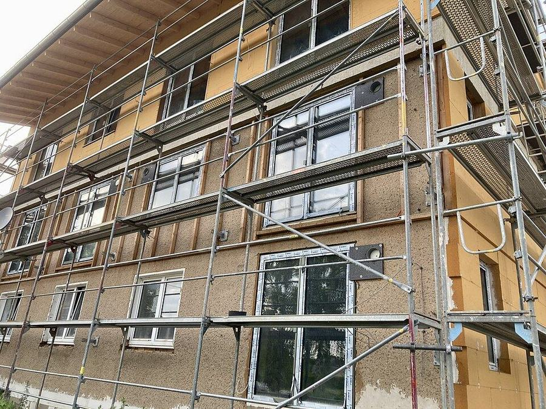
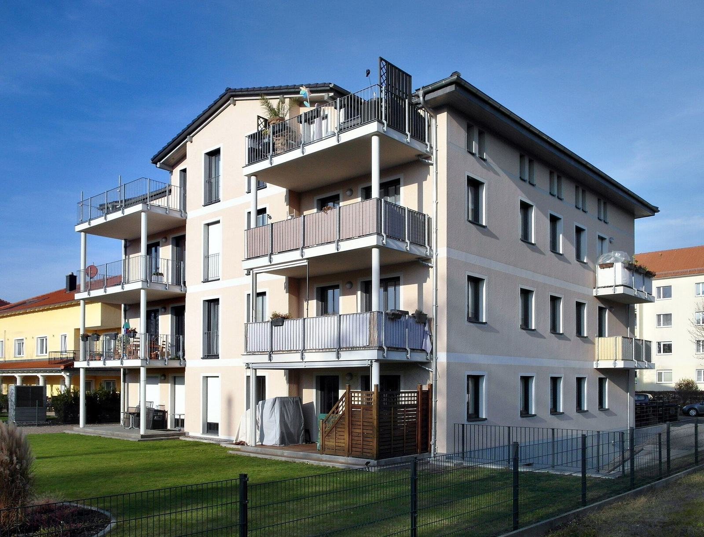
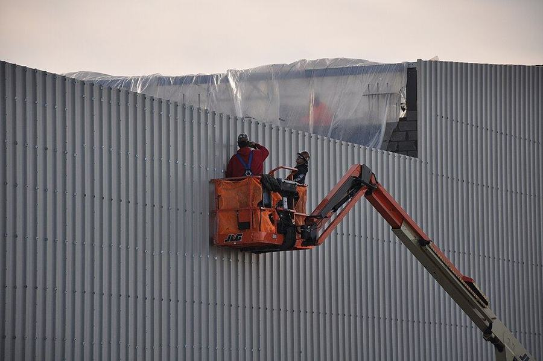
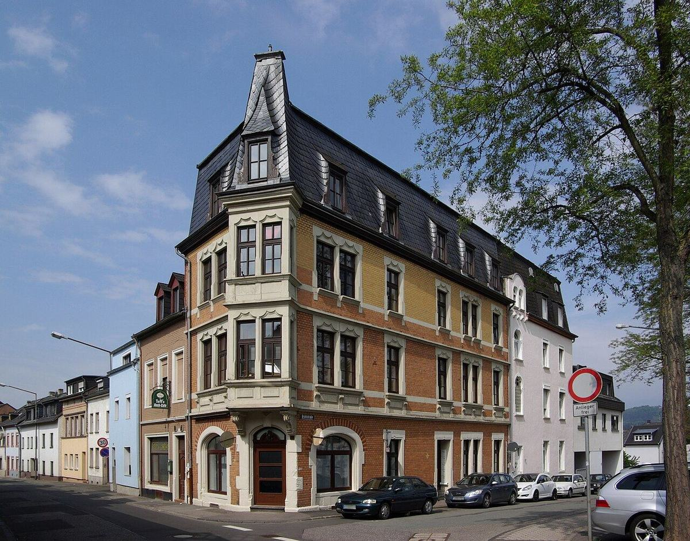
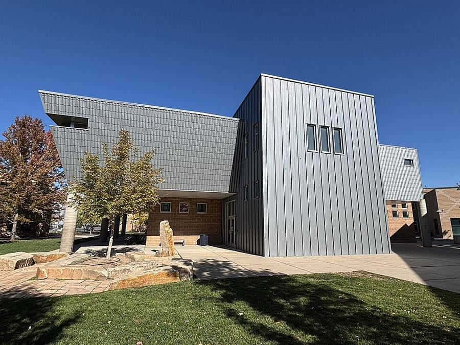

01Wärmedämmung (WDVS)
Das Wärmedämmverbundsystem senkt Heizkosten spürbar und schützt das Mauerwerk. Wir arbeiten mit EPS, Mineralwolle oder ökologischer Holzfaser.

Wärmedämmung, Fassadensanierung und hinterlüftete Fassaden aus einer Hand — sauber geplant, termintreu montiert und mit bis zu 40 % weniger Heizkosten.
Vom Einfamilienhaus bis zum Bürogebäude: Wir planen, dämmen, verkleiden und sanieren — mit eigenem Team, eigenem Gerüst und einem festen Ansprechpartner.

01Das Wärmedämmverbundsystem senkt Heizkosten spürbar und schützt das Mauerwerk. Wir arbeiten mit EPS, Mineralwolle oder ökologischer Holzfaser.

02Langlebig, wartungsarm und architektonisch frei: Unterkonstruktion, Dämmung und Bekleidung aus Faserzement, Metall oder Keramik.
Edel-, Silikon- oder Kalkputz mit Farbkonzept und Musterfläche vor Ort.
Algen und Grünbelag entfernen, Hydrophobierung und Schutzanstrich.

05Stuck, Gesimse und historische Putze — saniert mit Respekt vor dem Original und in Abstimmung mit dem Denkmalamt.

06Lärche, Thermoholz, Zink oder Aluminium — individuelle Bekleidungen für Neubau und Aufstockung.
Material, Farbe und Dämmstärke wählen — und sofort sehen, wie Ihr Haus aussehen könnte, was es ungefähr kostet und wie viel Energie Sie sparen.
Unverbindliche Richtwerte für ein beheiztes Wohngebäude (Bestand U ≈ 1,2 W/m²K). Das genaue Angebot erstellen wir nach dem Vor-Ort-Termin.
Stadthaus, Baujahr 1898: Risse, Algen und abblätternde Farbe. Nach sieben Wochen strahlt die Fassade wieder — inklusive restauriertem Stuck.
Ein Auszug aus über 600 Fassaden in Oberösterreich und Umgebung. Tippen Sie auf ein Projekt für alle Details.
Klare Termine, ein fixer Bauleiter und tägliche Baustellenreinigung. Sie wissen immer, was gerade passiert.
Bestandsaufnahme, Wärmebild und Ihre Wünsche zu Material und Farbe.
Transparentes Angebot und Unterstützung bei allen Förderanträgen.
Eigenes Gerüst, Schutz von Fenstern und Garten, Untergrund prüfen.
Dämmung, Armierung und Oberfläche — mit Wochenbericht per Foto.
Gemeinsame Abnahme, Dokumentation und 10 Jahre Gewährleistung.
4,9 von 5 Sternen aus über 230 Bewertungen — weil wir lieber einmal mehr nachfragen als einmal zu wenig.
„Das Team war pünktlich, freundlich und hat jeden Abend aufgeräumt. Unsere Heizkosten sind im ersten Winter um fast ein Drittel gesunken.“
„Wir haben drei Angebote verglichen. HAUTWERK war nicht das billigste, aber das einzige, das jeden Anschluss im Detail erklärt hat. Das Ergebnis spricht für sich.“
„Der Konfigurator hat uns sehr geholfen, uns für eine Farbe zu entscheiden. Die Musterfläche vor Ort war dann das i-Tüpfelchen.“
Ihre Frage ist nicht dabei? Rufen Sie uns an — wir beraten Sie gerne kostenlos.
Frage stellenKostenloser Fassaden-Check vor Ort, Angebot innerhalb von fünf Werktagen.